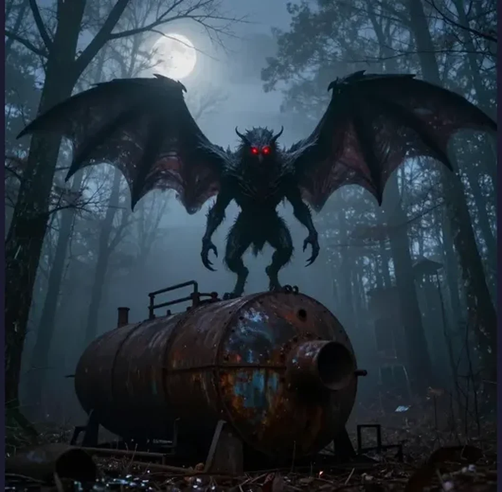

Mothman: The Winged Creature That Terrorized a West Virginia Town for 13 Months

Red eyes by the bunkers
It was the evening of November 15, 1966. Two young couples were driving through an old TNT plant outside Point Pleasant, West Virginia. This small town sits on the banks of the Ohio River. The friends were Roger and Linda Scarberry and Steve and Mary Mallette.
They were not looking for monsters. They were just cruising around, as young people in country towns did on a Tuesday night. Then they saw something standing in the shadows near the old bunkers where explosives had once been kept.
It was about seven feet tall. It had wings folded against its back. And its eyes were large and glowing red. They stared straight at the four friends.
What did they see? And why do people still talk about it? First, let us follow the car.
The chase and the headline
The creature chased their car as they fled. They said it kept up with them at more than 100 miles per hour. It did not run. It glided. When they reached the Point Pleasant city limits, it turned and vanished into the dark.
The four shaken witnesses told the local sheriff. By the next morning the story was on the front page of the Point Pleasant Register. The headline read: “Couples See Man-Sized Bird... Creature... Something.”
The witnesses said it stood six to seven feet tall, with a wingspan of about ten feet. Accounts differ on its color. Some say gray and some say black. The most disturbing thing was its eyes. They were large and round, and they gave off a red glow.
By the end of November, reporters from around the country had come to Point Pleasant. The name “Mothman” had entered the American language. It was probably inspired by the villain Killer Moth from the popular Batman comics and TV show.
Was the place itself part of the story?
The TNT plant
The West Virginia Ordnance Works was known locally as the “TNT plant.” It was a huge factory from World War II near Point Pleasant. During the war it made trinitrotoluene, or TNT, an explosive, for the army. After the war the plant was closed and mostly abandoned.
It left behind a huge group of concrete igloos. These were bunkers covered with earth, once used to store explosives. Forest and wet land surrounded them. The place was dark, lonely, and eerie even before anyone saw a creature there. Most of the earliest sightings happened in or near it.
The four friends were not the only ones. Imagine a few days earlier, in a cemetery in Clendenin, West Virginia, about fifty miles away. On November 12, 1966, five men were digging a grave. One of them, Kenneth Duncan, said a human-like figure glided through the trees over their heads. He told his story only after the Point Pleasant news came out. Some people think he may have seen a startled flying squirrel.
In the weeks that followed, sightings multiplied. A woman named Marcella Bennett said that she saw a large gray creature near the TNT plant. Over the next thirteen months, many people in the area said they saw the same being. Some accounts say more than one hundred people did.
A town of strange events
The sightings did not stand alone. In those thirteen months, Point Pleasant and the nearby region had many other strange events. There were UFO sightings, odd phone calls, and electrical problems.
On November 2, 1966, two weeks before the first big sighting, an appliance salesman named Woody Derenberger said he was driving on Interstate 77 near Parkersburg, West Virginia. He said a strange vehicle pulled up beside his car. The driver, a tall man with a wide, fixed grin, said his name was Indrid Cold. Derenberger said they spoke without words, mind to mind. No one else saw this, so it remains one man’s story.
That story caught the attention of John A. Keel. Keel was a journalist and paranormal investigator from New York. He visited the town again and again between 1966 and 1967 and talked with many witnesses. He wrote that some witnesses were visited by people who said they were government agents. These visits were called “Men in Black” visits. Similar stories appear in other UFO cases of the 1950s and 1960s.
Then the story took a darker turn.
The evening the bridge fell
On December 15, 1967, at about 5:00 p.m., it was the evening rush hour. The Silver Bridge carried U.S. Route 35 over the Ohio River. It linked Point Pleasant with Gallipolis, Ohio. Without warning, the bridge collapsed.
The bridge was full of cars and trucks. In seconds the whole structure fell into the freezing river. Forty-six people died. Sources give slightly different counts, but about thirty-one or thirty-two vehicles fell into the river. Two of the victims were never found.
The National Transportation Safety Board, or NTSB, investigated. It found that the collapse began with a crack in a single part, called eyebar 330. An eyebar is a flat metal bar with a round hole, or “eye,” at each end.
The Silver Bridge was built in 1928. Its suspension chains were made of eyebars joined by pins through the eyes. The design had little backup. If one eyebar broke, the whole chain would come apart.
The NTSB found that the crack was caused by stress corrosion cracking and corrosion fatigue. This is the slow, hidden growth of a crack in metal that is stressed again and again over many years. It could not be found with the inspection tools of the time. And the Mothman sightings stopped after the bridge fell.
A warning from another world?
Some people believed the creature was a harbinger of disaster, a warning of death. For them, the timing was a sign. Keel’s 1975 book, The Mothman Prophecies, linked the sightings to the collapse in just this way.
Keel saw the events in Point Pleasant as part of a bigger pattern of paranormal activity, which means events that science cannot explain. He came up with the “ultraterrestrial hypothesis.” This is the idea that the beings behind UFOs and other odd events are not visitors from other planets. He thought they were beings from other dimensions who had always lived alongside humans.
You may or may not accept Keel’s theories. But his book is still the best-known record of the Mothman story. Keel wrote it from the point of view of a believer, and many parts rest on witness stories alone.
Skeptics, who ask for proof before they believe, saw a flaw in this logic. People had been seeing the Mothman for thirteen months. They lived in a small town where almost every landmark was within walking distance of the bridge. So any pattern could be found afterward. Is there a plainer answer?
Could it be a bird?
The most common skeptical explanation is that witnesses saw sandhill cranes. This idea came from Robert Smith, a wildlife scientist at West Virginia University. He said a sandhill crane may have wandered off its usual path. These are large birds. They stand about four feet tall and have wingspans of about six or seven feet. They also have red skin on the face.
Some people have also suggested large owls, whose eyes can shine in car headlights. Or it might have been a mix of mistakes and mass suggestion. The heavy news coverage and the isolation of the area probably made the effect stronger. Witnesses saw unclear shapes and understood them in light of the growing legend.
Other cases are much like the Mothman. The Flatwoods Monster of West Virginia (1952) and the Owlman of Cornwall, England (1976) had human-like shapes and glowing eyes, and they appeared near small communities. Do these likenesses point to a real phenomenon found in many cultures? Or do they just show that people everywhere link the unknown with bad omens? That is a matter of opinion.
The town remembers
Today the Mothman is also a business. Point Pleasant, with about 4,000 people, has built a tourist trade around the creature. The Mothman Museum opened in 2006. A twelve-foot metal statue of the creature stands in town. The Mothman Festival is held every September, and its organizer says it brings 10,000 to 12,000 visitors. The 2002 film The Mothman Prophecies, starring Richard Gere, introduced the legend to the world.
But behind the souvenirs and the movies lies a real tragedy. Forty-six people died when the Silver Bridge collapsed. The people of Point Pleasant lived through thirteen months of real fear and then a real disaster. They deserve to be remembered as more than characters in a ghost story.
Here is what we know. Four friends said they saw something by the bunkers, and the bridge fell thirteen months later because of a crack in one metal part. Here is what is open. Nobody knows what flew through the West Virginia night in 1966. Was it a crane, an owl, or something else? The shadow it cast over that small river town has never fully lifted.
References & Further Reading
📚 Recommended Reading: The Mothman Prophecies by John A. Keel (on Amazon) — As an Amazon Associate, we earn from qualifying purchases.
Editorial note: The Point Pleasant sightings and the Silver Bridge collapse are well documented, but no physical proof of a creature exists. Whether the Mothman was a bird, a mistake, or a legend is still argued. See our Editorial Policy.